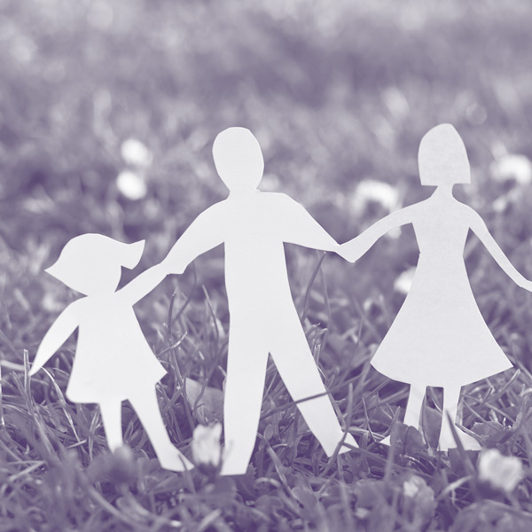

- 
Gedurende de groei van kinderen dienen zich steeds nieuwe ontwikkelingsfasen aan, die niet altijd even gemakkelijk verlopen. Soms heeft een kind specifieke behoeften, soms kunnen ouders extra steun gebruiken in de opvoeding.
Door als ouder naar uw kind te luisteren en met uw kind te praten, kunnen ouders veel moeilijkheden zelf oplossen. Uit eigen ervaring weet ik dat het heel fijn is met een professional van gedachten te wisselen wanneer moeilijkheden problemen worden. Ik werk graag vanuit de driehoek omgeving thuis, kind en school en betrek voor het kind belangrijke personen bij de coaching. Mijn begeleiding is maatwerk en precies afgestemd op uw kind.
Ik wil u en uw kind graag een luisterend oor en helpende hand aanreiken, want alleen ouders en een kind in balans kunnen optimaal functioneren!
Nieuwsgierig geworden naar wat ik voor u of uw kind kan betekenen en hoe ik te werk ga, dan wil ik u graag uitnodigen om verder op de website te kijken.
Graag tot ziens!
Annelies Moens